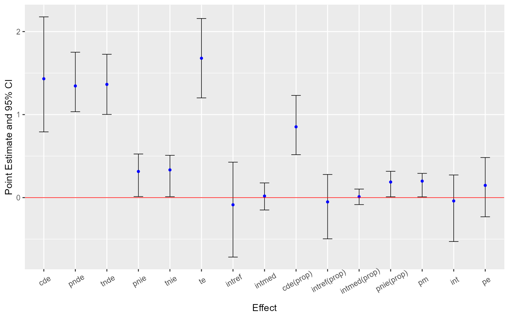

We illustrate the general workflow of the CMAverse package by a quick example. The general workflow is:
Plot the DAG of the scientific setting using the
cmdagfunction.Estimate the causal effects and make inferences using the
cmestfunction.Conduct sensitivity analysis for unmeasured confounding and measurement error using the
cmsensfunction.
Firstly, let’s load the package.
library(CMAverse)
Next, we simulate some data and plot the DAG of the scientific setting. The simulated dataset contains a binary exposure, a binary mediator, a continuous mediator, a continuous outcome and two pre-exposure confounders.
n <- 100 C1 <- rnorm(n, mean = 1, sd = 1) C2 <- rbinom(n, 1, 0.6) C2[which(C2 == 0)] <- "C2_0" C2[which(C2 == 1)] <- "C2_1" pa <- exp(0.2 - 0.5*C1 + 0.1*(C2 == "C2_1"))/(1 + exp(0.2 - 0.5*C1 + 0.1*(C2 == "C2_1"))) A <- rbinom(n, 1, pa) A[which(A == 0)] <- "control" A[which(A == 1)] <- "treat" pm <- exp(1 + 0.5*(A == "treat") - 1.5*C1 + 0.5*(C2 == "C2_1"))/ (1 + exp(1 + 0.5*(A == "treat") - 1.5*C1 + 0.5*(C2 == "C2_1"))) M1 <- rbinom(n, 1, pm) M2 <- rnorm(n, 2 + 0.8*(A == "treat") - M1 + 0.5*C1 + 2*(C2 == "C2_1"), 1) Y <- rnorm(n, mean = 0.5 + 0.4*(A == "treat") + 0.5*M1 + 0.6*M2 + 0.3*(A == "treat")*M1 + 0.2*(A == "treat")*M2 - 0.3*C1 + 2*(C2=="C2_1"), sd = 1) data <- data.frame(A, M1, M2, Y, C1, C2)
The DAG can be plotted using the cmdag function.
cmdag(outcome = "Y", exposure = "A", mediator = c("M1", "M2"), basec = c("C1", "C2", "C3"), postc = NULL, node = FALSE, text_col = "black")

Then, we estimate the causal effects using the cmest function. We use the regression-based approach for illustration. The reference values for the exposure are set to be 0 and 1. The reference values for the two mediators are set to be 0.
est <- cmest(data = data, model = "rb", outcome = "Y", exposure = "A", mediator = c("M1", "M2"), basec = c("C1", "C2"), EMint = TRUE, mreg = list("logistic", "linear"), yreg = "linear", astar = 0, a = 1, mval = list(0, 0), estimation = "imputation", inference = "bootstrap", nboot = 20)
Summarizing and plotting the results:
summary(est)
## # Causal Mediation Analysis via the Regression-based Approach
##
## Direct counterfactual imputation estimation with
## bootstrap standard errors, percentile confidence intervals and p-values
##
## Estimate Std.error 95% CIL 95% CIU P.val
## cde 0.423506 0.556861 -0.578666 1.254 0.8
## pnde 1.393924 0.232758 0.962289 1.824 <2e-16 ***
## tnde 1.508110 0.246699 1.131468 1.965 <2e-16 ***
## pnie 0.387577 0.102855 0.189816 0.481 <2e-16 ***
## tnie 0.501763 0.144696 0.293357 0.744 <2e-16 ***
## te 1.895687 0.238952 1.495774 2.273 <2e-16 ***
## intref 0.970418 0.565324 0.033158 1.994 0.1 .
## intmed 0.114186 0.090071 -0.021481 0.296 0.1 .
## cde(prop) 0.223405 0.305506 -0.319885 0.734 0.8
## intref(prop) 0.511908 0.297612 0.019452 1.103 0.1 .
## intmed(prop) 0.060235 0.046181 -0.012592 0.152 0.1 .
## pnie(prop) 0.204452 0.060217 0.105361 0.295 <2e-16 ***
## pm 0.264687 0.075801 0.182727 0.413 <2e-16 ***
## int 0.572143 0.329252 0.009457 1.187 0.1 .
## pe 0.776595 0.305506 0.266479 1.320 <2e-16 ***
## ---
## Signif. codes: 0 '***' 0.001 '**' 0.01 '*' 0.05 '.' 0.1 ' ' 1
##
## Reference values:
## $a
## [1] "treat"
##
## $astar
## [1] "control"
##
## $mval
## $mval[[1]]
## [1] 0
##
## $mval[[2]]
## [1] 0ggcmest(est) + ggplot2::theme(axis.text.x = ggplot2::element_text(angle = 30, vjust = 0.8))

Lastly, let’s conduct sensitivity analysis for the results. Sensitivity analysis for unmeasured confounding:
cmsens(object = est, sens = "uc")
## Sensitivity Analysis For Unmeasured Confounding
##
## Evalues on the ratio scale:
## estRR lowerRR upperRR Evalue.estRR Evalue.lowerRR Evalue.upperRR
## cde 1.186537 0.7642442 1.842173 1.656998 1.000000 NA
## pnde 1.755856 1.4609443 2.110299 2.907885 2.281562 NA
## tnde 1.838724 1.5131384 2.234367 3.080570 2.394302 NA
## pnie 1.169444 1.0781816 1.268432 1.614591 1.368516 NA
## tnie 1.224637 1.0923568 1.372935 1.749135 1.409983 NA
## te 2.150285 1.7803927 2.597026 3.723003 2.959123 NAAssume that the continuous pre-exposure confounder was measured with error. Sensitivity analysis for measurement error using regression calibration with a set of assumed standard deviations of the measurement error 0.1, 0.2 and 0.3:
me1 <- cmsens(object = est, sens = "me", MEmethod = "rc", MEvariable = "C1", MEvartype = "con", MEerror = c(0.1, 0.2, 0.3))
Summarizing and plotting the results:
summary(me1)
## Sensitivity Analysis For Measurement Error
##
## The variable measured with error: C1
## Type of the variable measured with error: continuous
##
## Measurement error 1:
## [1] 0.1
##
## Measurement error correction for measurement error 1:
## Estimate Std.error 95% CIL 95% CIU P.val
## cde 0.42111 0.73486 -0.75908 1.771 0.7
## pnde 1.38859 0.18994 1.16447 1.764 <2e-16 ***
## tnde 1.49999 0.19201 1.24363 1.931 <2e-16 ***
## pnie 0.38896 0.18272 0.13922 0.803 <2e-16 ***
## tnie 0.50037 0.18091 0.20813 0.870 <2e-16 ***
## te 1.88895 0.21092 1.72272 2.394 <2e-16 ***
## intref 0.96747 0.63796 -0.11820 2.109 0.1 .
## intmed 0.11140 0.11360 -0.06185 0.345 0.2
## cde(prop) 0.22294 0.36957 -0.38428 0.885 0.7
## intref(prop) 0.51217 0.32884 -0.07366 1.057 0.1 .
## intmed(prop) 0.05898 0.05811 -0.03276 0.169 0.2
## pnie(prop) 0.20591 0.08288 0.07759 0.382 <2e-16 ***
## pm 0.26489 0.08213 0.11769 0.425 <2e-16 ***
## int 0.57115 0.38072 -0.08992 1.206 0.1 .
## pe 0.77706 0.36957 0.11468 1.384 0.1 .
## ---
## Signif. codes: 0 '***' 0.001 '**' 0.01 '*' 0.05 '.' 0.1 ' ' 1
## ----------------------------------------------------------------
##
## Measurement error 2:
## [1] 0.2
##
## Measurement error correction for measurement error 2:
## Estimate Std.error 95% CIL 95% CIU P.val
## cde 0.41340 0.64894 -0.61297 1.430 0.8
## pnde 1.37471 0.20997 1.07158 1.786 <2e-16 ***
## tnde 1.50263 0.22628 1.18654 2.014 <2e-16 ***
## pnie 0.39468 0.17597 0.02705 0.642 <2e-16 ***
## tnie 0.52261 0.20334 0.11507 0.732 <2e-16 ***
## te 1.89731 0.26139 1.52771 2.435 <2e-16 ***
## intref 0.96130 0.60601 0.23813 1.958 <2e-16 ***
## intmed 0.12792 0.10458 -0.05139 0.319 0.1 .
## cde(prop) 0.21789 0.35173 -0.34034 0.777 0.8
## intref(prop) 0.50667 0.33436 0.11719 1.079 <2e-16 ***
## intmed(prop) 0.06742 0.05264 -0.02535 0.159 0.1 .
## pnie(prop) 0.20802 0.08440 0.01462 0.315 <2e-16 ***
## pm 0.27545 0.09408 0.06064 0.382 <2e-16 ***
## int 0.57409 0.37653 0.09768 1.189 <2e-16 ***
## pe 0.78211 0.35173 0.22313 1.340 <2e-16 ***
## ---
## Signif. codes: 0 '***' 0.001 '**' 0.01 '*' 0.05 '.' 0.1 ' ' 1
## ----------------------------------------------------------------
##
## Measurement error 3:
## [1] 0.3
##
## Measurement error correction for measurement error 3:
## Estimate Std.error 95% CIL 95% CIU P.val
## cde 0.398435 0.668214 -0.598701 1.499 0.7
## pnde 1.351480 0.211130 1.043961 1.744 <2e-16 ***
## tnde 1.477483 0.197400 1.131420 1.777 <2e-16 ***
## pnie 0.404105 0.234283 0.087312 0.886 <2e-16 ***
## tnie 0.530107 0.231335 0.151966 0.995 <2e-16 ***
## te 1.881588 0.290616 1.564649 2.542 <2e-16 ***
## intref 0.953046 0.606930 0.024188 1.808 0.1 .
## intmed 0.126003 0.110436 -0.089632 0.310 0.3
## cde(prop) 0.211754 0.336035 -0.346251 0.717 0.7
## intref(prop) 0.506511 0.363515 0.010838 1.048 0.1 .
## intmed(prop) 0.066966 0.056945 -0.040814 0.159 0.3
## pnie(prop) 0.214768 0.099904 0.053531 0.383 <2e-16 ***
## pm 0.281734 0.095776 0.095335 0.446 <2e-16 ***
## int 0.573478 0.404551 -0.009475 1.205 0.1 .
## pe 0.788246 0.336035 0.282689 1.346 <2e-16 ***
## ---
## Signif. codes: 0 '***' 0.001 '**' 0.01 '*' 0.05 '.' 0.1 ' ' 1
## ----------------------------------------------------------------ggcmsens(me1) + ggplot2::theme(axis.text.x = ggplot2::element_text(angle = 30, vjust = 0.8))

Then, assume that the exposure was measured with error. Sensitivity analysis for measurement error using SIMEX with two assumed misclassification matrices:
me2 <- cmsens(object = est, sens = "me", MEmethod = "simex", MEvariable = "A", MEvartype = "cat", B = 5, MEerror = list(matrix(c(0.95, 0.05, 0.05, 0.95), nrow = 2), matrix(c(0.9, 0.1, 0.1, 0.9), nrow = 2)))
Summarizing and plotting the results:
summary(me2)
## Sensitivity Analysis For Measurement Error
##
## The variable measured with error: A
## Type of the variable measured with error: categorical
##
## Measurement error 1:
## [,1] [,2]
## [1,] 0.95 0.05
## [2,] 0.05 0.95
##
## Measurement error correction for measurement error 1:
## Estimate Std.error 95% CIL 95% CIU P.val
## cde 1.33486 1.10826 -0.88648 2.846 0.6
## pnde 2.08238 0.31068 1.14341 2.106 <2e-16 ***
## tnde 2.16236 0.39007 1.03569 2.453 <2e-16 ***
## pnie 0.39217 0.26518 -0.03289 0.880 0.1 .
## tnie 0.47215 0.26806 0.02355 0.913 <2e-16 ***
## te 2.55453 0.40005 1.36543 2.764 <2e-16 ***
## intref 0.74752 1.16059 -1.40174 2.424 0.4
## intmed 0.07998 0.21673 -0.24583 0.430 0.8
## cde(prop) 0.52255 0.69096 -0.43792 1.936 0.6
## intref(prop) 0.29262 0.64746 -1.07789 1.130 0.4
## intmed(prop) 0.03131 0.10570 -0.14057 0.216 0.8
## pnie(prop) 0.15352 0.12339 -0.02150 0.407 0.1 .
## pm 0.18483 0.11558 0.01520 0.425 <2e-16 ***
## int 0.32393 0.74060 -1.17842 1.309 0.4
## pe 0.47745 0.69096 -0.93613 1.438 0.3
## ---
## Signif. codes: 0 '***' 0.001 '**' 0.01 '*' 0.05 '.' 0.1 ' ' 1
## ----------------------------------------------------------------
##
## Measurement error 2:
## [,1] [,2]
## [1,] 0.9 0.1
## [2,] 0.1 0.9
##
## Measurement error correction for measurement error 2:
## Estimate Std.error 95% CIL 95% CIU P.val
## cde 0.63443 0.82038 -0.15359 2.368 0.1 .
## pnde 1.80636 0.30024 1.39174 2.364 <2e-16 ***
## tnde 2.09235 0.30749 1.46866 2.530 <2e-16 ***
## pnie 0.51947 0.20384 0.11455 0.706 <2e-16 ***
## tnie 0.80546 0.28506 0.17703 1.052 <2e-16 ***
## te 2.61182 0.35757 1.69676 2.972 <2e-16 ***
## intref 1.17192 0.67317 -0.31695 1.684 0.3
## intmed 0.28600 0.17598 -0.14523 0.510 0.4
## cde(prop) 0.24291 0.33980 -0.11993 0.929 0.1 .
## intref(prop) 0.44870 0.32414 -0.13013 0.980 0.3
## intmed(prop) 0.10950 0.06483 -0.05749 0.183 0.4
## pnie(prop) 0.19889 0.07382 0.06066 0.279 <2e-16 ***
## pm 0.30839 0.09628 0.09054 0.380 <2e-16 ***
## int 0.55820 0.36390 -0.15306 1.052 0.3
## pe 0.75709 0.33980 0.07112 1.120 <2e-16 ***
## ---
## Signif. codes: 0 '***' 0.001 '**' 0.01 '*' 0.05 '.' 0.1 ' ' 1
## ----------------------------------------------------------------ggcmsens(me2) + ggplot2::theme(axis.text.x = ggplot2::element_text(angle = 30, vjust = 0.8))